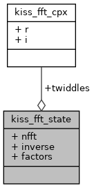

#include <_kiss_fft_guts.h>
kiss_fft_state 的协作图:

Public 属性 | |
| int | nfft |
| int | inverse |
| int | factors [2 *MAXFACTORS] |
| kiss_fft_cpx | twiddles [1] |
类成员变量说明
| int kiss_fft_state::factors[2 *MAXFACTORS] |
| int kiss_fft_state::inverse |
| int kiss_fft_state::nfft |
| kiss_fft_cpx kiss_fft_state::twiddles[1] |
该结构体的文档由以下文件生成:
- src/lib/external/kiss_fft/_kiss_fft_guts.h